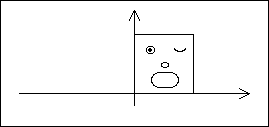
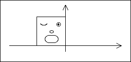
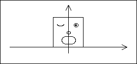
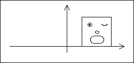
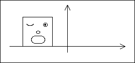

Translation and Reflection Order
Start with this picture.

Reflection (r = -1), then translation (e = 1/2) gives


Translation (e = 1/2), then reflection (r = -1) gives


Return to
Geometry of Plane Transformations
.